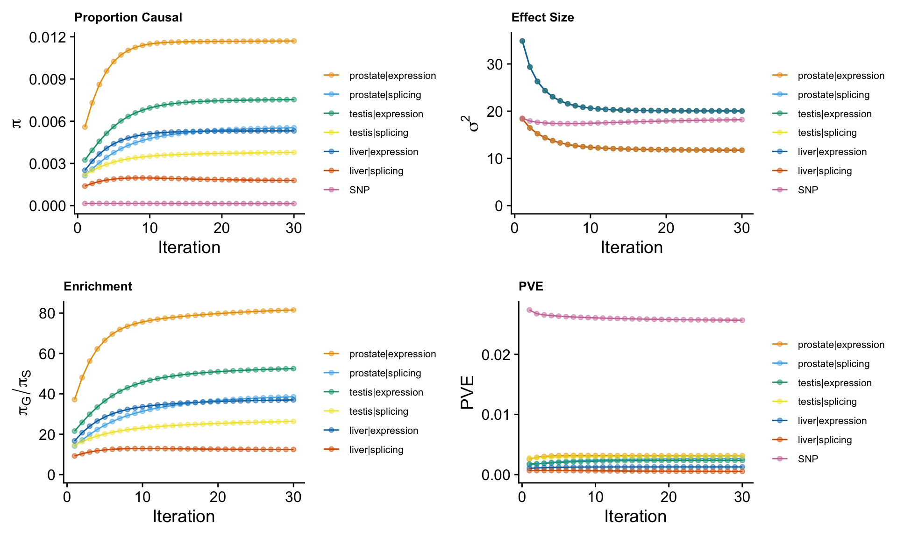
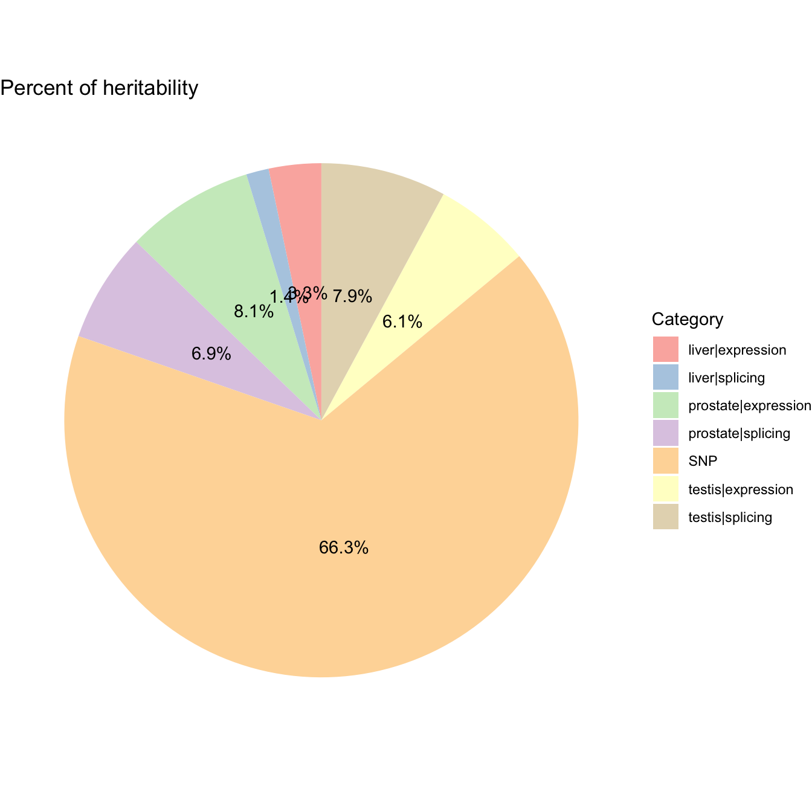
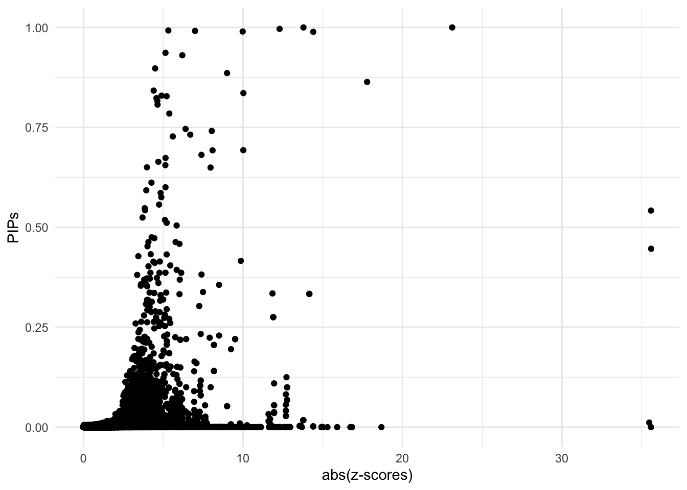

Prostate Cancer ~ Predictdb eQTL&sQTL from Prostate&Testis&Liver
Nina Yifan Yang
2024-10-04
Last updated: 2024-10-04
Checks: 7 0
Knit directory: Multigroup_cTWAS/
This reproducible R Markdown analysis was created with workflowr (version 1.7.1). The Checks tab describes the reproducibility checks that were applied when the results were created. The Past versions tab lists the development history.
Great! Since the R Markdown file has been committed to the Git repository, you know the exact version of the code that produced these results.
Great job! The global environment was empty. Objects defined in the global environment can affect the analysis in your R Markdown file in unknown ways. For reproduciblity it’s best to always run the code in an empty environment.
The command set.seed(20241004) was run prior to running
the code in the R Markdown file. Setting a seed ensures that any results
that rely on randomness, e.g. subsampling or permutations, are
reproducible.
Great job! Recording the operating system, R version, and package versions is critical for reproducibility.
Nice! There were no cached chunks for this analysis, so you can be confident that you successfully produced the results during this run.
Great job! Using relative paths to the files within your workflowr project makes it easier to run your code on other machines.
Great! You are using Git for version control. Tracking code development and connecting the code version to the results is critical for reproducibility.
The results in this page were generated with repository version a715301. See the Past versions tab to see a history of the changes made to the R Markdown and HTML files.
Note that you need to be careful to ensure that all relevant files for
the analysis have been committed to Git prior to generating the results
(you can use wflow_publish or
wflow_git_commit). workflowr only checks the R Markdown
file, but you know if there are other scripts or data files that it
depends on. Below is the status of the Git repository when the results
were generated:
Ignored files:
Ignored: .DS_Store
Ignored: .Rhistory
Untracked files:
Untracked: analysis/cTWAS_noLD_european_GENE_SUMMARY.Rmd
Untracked: analysis/cTWAS_noLD_european_intestinewb_output.Rmd
Untracked: analysis/cTWAS_noLD_european_liver_output.Rmd
Untracked: analysis/cTWAS_noLD_european_lung_output.Rmd
Untracked: analysis/cTWAS_noLD_european_lungliver_output.Rmd
Untracked: analysis/cTWAS_noLD_european_lungliverlymphocytes_output.Rmd
Untracked: analysis/cTWAS_noLD_european_lymphocytes_output.Rmd
Untracked: analysis/cTWAS_noLD_european_prostatetestis_output.Rmd
Note that any generated files, e.g. HTML, png, CSS, etc., are not included in this status report because it is ok for generated content to have uncommitted changes.
These are the previous versions of the repository in which changes were
made to the R Markdown
(analysis/cTWAS_noLD_european_prostatetestisliver_output.Rmd)
and HTML
(docs/cTWAS_noLD_european_prostatetestisliver_output.html)
files. If you’ve configured a remote Git repository (see
?wflow_git_remote), click on the hyperlinks in the table
below to view the files as they were in that past version.
| File | Version | Author | Date | Message |
|---|---|---|---|---|
| Rmd | a715301 | yy896 | 2024-10-04 | Add my first analysis |
We present a sample cTWAS report based on real data analysis. The analyzed trait is prostate cancer, the prediction models are Prostate & Testis & Liver gene expression and splicing models trained on GTEx v8 in the PredictDB format.
Analysis Settings
Input Data
- GWAS Z-scores
The summary statistics for prostate cancer are downloaded from https://www.ebi.ac.uk/gwas/downloads/summary-statistics, using dataset ID: GCST90274714.
The sample size is
[1] "gwas_n = 726828"- Prediction models
The prediction models used in this analysis are prostate & testis & liver gene expression and splicing models, trained on GTEx v8 in the PredictDB format. These models can be downloaded from https://predictdb.org/post/2021/07/21/gtex-v8-models-on-eqtl-and-sqtl/
- Reference data
We did not include LD reference in the analysis.
Data processing and harmonization
We map the reference SNPs to regions following the instructions from the cTWAS tutorial.
When processing z-scores, we exclude multi-allelic and
strand-ambiguous variants by setting
drop_multiallelic = TRUE and
drop_strand_ambig = TRUE.
The process can be divided into steps below, users can expand the code snippets below to view the exact code used.
- Input and output settings
weight_prostate_expression_file <- system.file("extdata/project_data",
"mashr_Prostate_e.db", package = "ctwas")
weight_prostate_splicing_file <- system.file("extdata/project_data",
"mashr_Prostate_s.db", package = "ctwas")
weight_testis_expression_file <- system.file("extdata/project_data",
"mashr_Testis_e.db", package = "ctwas")
weight_testis_splicing_file <- system.file("extdata/project_data",
"mashr_Testis_s.db", package = "ctwas")
weight_liver_expression_file <- system.file("extdata/project_data",
"mashr_Liver_e.db", package = "ctwas")
weight_liver_splicing_file <- system.file("extdata/project_data",
"mashr_Liver_s.db", package = "ctwas")
z_snp <- vroom::vroom("~/Desktop/Prostate Cancer Project/GCST90274714.mod.tsv.gz", col_names = TRUE, show_col_types = FALSE)
z_snp$Z <- z_snp$beta / z_snp$standard_error
z_snp <- z_snp[, c("rsid", "other_allele", "effect_allele", "Z")]
colnames(z_snp) <- c("id", "A1", "A2", "z")
region_file <- system.file("extdata/ldetect", "EUR.b38.ldetect.regions.RDS", package = "ctwas")
region_info <- readRDS(region_file)
## other parameters
ncore <- 6- Preprocessing GWAS
### Preprocess SNP_map
ref_snp_info_file <- system.file("extdata/project_data", "ukb_b38_0.1_var_info.Rvar.gz", package = "ctwas")
ref_snp_info <- data.table::fread(ref_snp_info_file, sep = "\t")
class(ref_snp_info) <- "data.frame"
res <- create_snp_map(region_info, ref_snp_info)
region_info <- res$region_info
snp_map <- res$snp_map
### Preprocess GWAS z-scores
z_snp <- preprocess_z_snp(z_snp, snp_map,
drop_multiallelic = TRUE,
drop_strand_ambig = TRUE)- Preprocessing weights
weights_prostate_expression <- preprocess_weights(weight_prostate_expression_file,
region_info,
gwas_snp_ids = z_snp$id,
snp_map = snp_map,
type = "expression",
context = "prostate",
weight_name = "prostate_expression",
weight_format = "PredictDB",
drop_strand_ambig = TRUE,
scale_predictdb_weights = TRUE,
load_predictdb_LD = TRUE,
filter_protein_coding_genes = TRUE,
ncore = 6)
weights_prostate_splicing <- preprocess_weights(weight_prostate_splicing_file,
region_info,
gwas_snp_ids = z_snp$id,
snp_map = snp_map,
type = "splicing",
context = "prostate",
weight_name = "prostate_splicing",
weight_format = "PredictDB",
drop_strand_ambig = TRUE,
scale_predictdb_weights = TRUE,
load_predictdb_LD = TRUE,
filter_protein_coding_genes = TRUE,
ncore = 6)
weights_testis_expression <- preprocess_weights(weight_testis_expression_file,
region_info,
gwas_snp_ids = z_snp$id,
snp_map = snp_map,
type = "expression",
context = "testis",
weight_name = "testis_expression",
weight_format = "PredictDB",
drop_strand_ambig = TRUE,
scale_predictdb_weights = TRUE,
load_predictdb_LD = TRUE,
filter_protein_coding_genes = TRUE,
ncore = 6)
weights_testis_splicing <- preprocess_weights(weight_testis_splicing_file,
region_info,
gwas_snp_ids = z_snp$id,
snp_map = snp_map,
type = "splicing",
context = "testis",
weight_name = "testis_splicing",
weight_format = "PredictDB",
drop_strand_ambig = TRUE,
scale_predictdb_weights = TRUE,
load_predictdb_LD = TRUE,
filter_protein_coding_genes = TRUE,
ncore = 6)
weights_liver_expression <- preprocess_weights(weight_liver_expression_file,
region_info,
gwas_snp_ids = z_snp$id,
snp_map = snp_map,
type = "expression",
context = "liver",
weight_name = "liver_expression",
weight_format = "PredictDB",
drop_strand_ambig = TRUE,
scale_predictdb_weights = TRUE,
load_predictdb_LD = TRUE,
filter_protein_coding_genes = TRUE,
ncore = 6)
weights_liver_splicing <- preprocess_weights(weight_liver_splicing_file,
region_info,
gwas_snp_ids = z_snp$id,
snp_map = snp_map,
type = "splicing",
context = "liver",
weight_name = "liver_splicing",
weight_format = "PredictDB",
drop_strand_ambig = TRUE,
scale_predictdb_weights = TRUE,
load_predictdb_LD = TRUE,
filter_protein_coding_genes = TRUE,
ncore = 6)
weights <- c(
weights_prostate_expression,
weights_prostate_splicing,
weights_testis_expression,
weights_testis_splicing,
weights_liver_expression,
weights_liver_splicing)Running cTWAS analysis
We use the ctwas main function ctwas_sumstats_noLD to
run the cTWAS analysis without LD. For more details on this function,
refer to the cTWAS tutorial: https://xinhe-lab.github.io/multigroup_ctwas/articles/minimal_tutorial.html
All arguments are set to their default values.
Users can expand the code snippets below to view the exact code used.
ctwas_res <- ctwas_sumstats_noLD(z_snp,
weights,
region_info,
snp_map,
thin = 0.1,
ncore = 6)Parameter estimation
ctwas_res is the object contains the outputs of
cTWAS
We extract the estimated parameters by
param <- ctwas_res$param
We make plots using the function
make_convergence_plots(param, gwas_n) to see how estimated
parameters converge during the execution of the program:

These plots show the estimated prior inclusion probability, prior effect size variance, enrichment and proportion of variance explained (PVE) over the iterations of parameter estimation. The enrichment is defined as the ratio of the prior inclusion probability of molecular traits over the prior inclusion probability of variants. We generally expect molecular traits to have higher prior inclusion probability than variants. Enrichment values typically range from 20 - 100 for expression traits.
Then, we use summarize_param(param, gwas_n) to obtain
estimated parameters (from the last iteration) and to compute the PVE by
variants and molecular traits.
[1] "The number of genes/introns/SNPs used in the analysis is:"prostate|expression prostate|splicing testis|expression testis|splicing
9693 29875 11361 50036
liver|expression liver|splicing SNP
8721 19025 7146350 ctwas_parameters$attributable_pve contains the
proportion of heritability mediated by molecular traits and variants, we
visualize it using pie chart.
ctwas_parameters <- summarize_param(param, gwas_n)
data <- data.frame(
category = names(ctwas_parameters$attributable_pve),
percentage = ctwas_parameters$attributable_pve
)
# Calculate percentage labels for the chart
data$percentage_label <- paste0(round(data$percentage * 100, 1), "%")
ggplot(data, aes(x = "", y = percentage, fill = category)) +
geom_bar(stat = "identity", width = 1) +
coord_polar("y", start = 0) +
theme_void() + # Remove background and axes
geom_text(aes(label = percentage_label),
position = position_stack(vjust = 0.5)) +
scale_fill_brewer(palette = "Pastel1") +
labs(fill = "Category") +
ggtitle("Percent of heritability")
Diagnosis plots
For all genes analyzed, we compare the z-scores and fine-mapping PIPs”
ggplot(data = finemap_res[finemap_res$type!="SNP",], aes(x = abs(z), y = susie_pip)) +
geom_point() +
labs(x = "abs(z-scores)", y = "PIPs") +
theme_minimal()
Fine-mapping results
We process the fine-mapping results here.
We first add gene annotations to cTWAS results.
mapping_table is the combination of both expression and
splicing data.
finemap_res <- anno_finemap_res(finemap_res,
snp_map = snp_map,
mapping_table = mapping_table,
add_gene_annot = TRUE,
map_by = "molecular_id",
drop_unmapped = TRUE,
add_position = TRUE,
use_gene_pos = "mid")The annotated fine-mapping results, ones within credible sets are shown
Next, we compute gene PIPs across different types of molecular traits.
Combined PIPs
library(dplyr)
combined_pip_by_group <- combine_gene_pips(finemap_res,
group_by = "gene_name",
by = "group",
method = "combine_cs",
filter_cs = TRUE)2024-10-04 17:51:09.051538 INFO::Limit gene results to credible setscombined_pip_table <- subset(combined_pip_by_group, combined_pip > 0.8)
DT::datatable(combined_pip_table)Locus plots (from highest PIP to lowest 0.8 cutoff)
make_locusplot(finemap_res,
region_id = "20_34225635_36332043",
ens_db = ens_db,
weights = weights,
highlight_pip = 0.8,
filter_protein_coding_genes = TRUE,
filter_cs = TRUE,
color_pval_by = "cs",
color_pip_by = "cs")2024-10-04 17:51:09.662273 INFO::Limit to protein coding genes
2024-10-04 17:51:09.666311 INFO::focal id: ENSG00000126001.15|testis_expression
2024-10-04 17:51:09.666583 INFO::focal molecular trait: CEP250 testis expression
2024-10-04 17:51:09.666857 INFO::Range of locus: chr20:34225783-36417586chromosome 20, position 34225783 to 364175864269 SNPs/datapoints2024-10-04 17:51:09.764679 INFO::focal molecular trait QTL positions: 35445740,35454222,35456125
2024-10-04 17:51:09.77921 INFO::Limit PIPs to credible setsWarning: ggrepel: 831 unlabeled data points (too many overlaps). Consider
increasing max.overlaps
make_locusplot(finemap_res,
region_id = "2_240620667_241210506",
ens_db = ens_db,
weights = weights,
highlight_pip = 0.8,
filter_protein_coding_genes = TRUE,
filter_cs = TRUE,
color_pval_by = "cs",
color_pip_by = "cs")2024-10-04 17:51:11.156742 INFO::Limit to protein coding genes
2024-10-04 17:51:11.157369 INFO::focal id: intron_2_241195845_241199316|prostate_splicing
2024-10-04 17:51:11.157624 INFO::focal molecular trait: ANO7 prostate splicing
2024-10-04 17:51:11.157909 INFO::Range of locus: chr2:240621191-241608572chromosome 2, position 240621191 to 2416085722142 SNPs/datapoints2024-10-04 17:51:11.429069 INFO::focal molecular trait QTL positions: 241195850,241202304
2024-10-04 17:51:11.442227 INFO::Limit PIPs to credible setsWarning: ggrepel: 184 unlabeled data points (too many overlaps). Consider
increasing max.overlaps
make_locusplot(finemap_res,
region_id = "11_101460390_104088908",
ens_db = ens_db,
weights = weights,
highlight_pip = 0.8,
filter_protein_coding_genes = TRUE,
filter_cs = TRUE,
color_pval_by = "cs",
color_pip_by = "cs")2024-10-04 17:51:12.214584 INFO::Limit to protein coding genes
2024-10-04 17:51:12.215313 INFO::focal id: ENSG00000137673.8|liver_expression
2024-10-04 17:51:12.215725 INFO::focal molecular trait: MMP7 liver expression
2024-10-04 17:51:12.216044 INFO::Range of locus: chr11:101460301-104087928chromosome 11, position 101460301 to 1040879288445 SNPs/datapoints2024-10-04 17:51:12.269546 INFO::focal molecular trait QTL positions: 102530902,102530930
2024-10-04 17:51:12.282337 INFO::Limit PIPs to credible setsWarning: ggrepel: 94 unlabeled data points (too many overlaps). Consider
increasing max.overlaps
make_locusplot(finemap_res,
region_id = "19_54099074_55216712",
ens_db = ens_db,
weights = weights,
highlight_pip = 0.8,
filter_protein_coding_genes = TRUE,
filter_cs = TRUE,
color_pval_by = "cs",
color_pip_by = "cs")2024-10-04 17:51:12.993591 INFO::Limit to protein coding genes
2024-10-04 17:51:12.994208 INFO::focal id: ENSG00000170892.10|testis_expression
2024-10-04 17:51:12.994459 INFO::focal molecular trait: TSEN34 testis expression
2024-10-04 17:51:12.994728 INFO::Range of locus: chr19:54098580-55216001chromosome 19, position 54098580 to 552160014117 SNPs/datapoints2024-10-04 17:51:13.055069 INFO::focal molecular trait QTL positions: 54189591,54190017
2024-10-04 17:51:13.06788 INFO::Limit PIPs to credible setsWarning: ggrepel: 367 unlabeled data points (too many overlaps). Consider
increasing max.overlaps
make_locusplot(finemap_res,
region_id = "16_84412277_85115079",
ens_db = ens_db,
weights = weights,
highlight_pip = 0.8,
filter_protein_coding_genes = TRUE,
filter_cs = TRUE,
color_pval_by = "cs",
color_pip_by = "cs")2024-10-04 17:51:13.966343 INFO::Limit to protein coding genes
2024-10-04 17:51:13.966871 INFO::focal id: ENSG00000153786.12|prostate_expression
2024-10-04 17:51:13.967134 INFO::focal molecular trait: ZDHHC7 prostate expression
2024-10-04 17:51:13.967416 INFO::Range of locus: chr16:84412178-85114834chromosome 16, position 84412178 to 851148343434 SNPs/datapoints2024-10-04 17:51:14.173611 INFO::focal molecular trait QTL positions: 85011497,85011520,85018213
2024-10-04 17:51:14.186885 INFO::Limit PIPs to credible setsWarning: ggrepel: 135 unlabeled data points (too many overlaps). Consider
increasing max.overlaps
make_locusplot(finemap_res,
region_id = "11_124625632_126441425",
ens_db = ens_db,
weights = weights,
highlight_pip = 0.8,
filter_protein_coding_genes = TRUE,
filter_cs = TRUE,
color_pval_by = "cs",
color_pip_by = "cs")2024-10-04 17:51:14.883641 INFO::Limit to protein coding genes
2024-10-04 17:51:14.884283 INFO::focal id: ENSG00000165495.15|prostate_expression
2024-10-04 17:51:14.884542 INFO::focal molecular trait: PKNOX2 prostate expression
2024-10-04 17:51:14.884813 INFO::Range of locus: chr11:124627414-126441118chromosome 11, position 124627414 to 1264411185454 SNPs/datapoints2024-10-04 17:51:14.940327 INFO::focal molecular trait QTL positions: 125184897
2024-10-04 17:51:14.953132 INFO::Limit PIPs to credible setsWarning: ggrepel: 469 unlabeled data points (too many overlaps). Consider
increasing max.overlaps
make_locusplot(finemap_res,
region_id = "17_150263_1269105",
ens_db = ens_db,
weights = weights,
highlight_pip = 0.8,
filter_protein_coding_genes = TRUE,
filter_cs = TRUE,
color_pval_by = "cs",
color_pip_by = "cs")2024-10-04 17:51:15.876844 INFO::Limit to protein coding genes
2024-10-04 17:51:15.87743 INFO::focal id: ENSG00000179409.10|prostate_expression
2024-10-04 17:51:15.877692 INFO::focal molecular trait: GEMIN4 prostate expression
2024-10-04 17:51:15.87798 INFO::Range of locus: chr17:150409-1727661chromosome 17, position 150409 to 17276614287 SNPs/datapoints2024-10-04 17:51:15.933465 INFO::focal molecular trait QTL positions: 715725
2024-10-04 17:51:15.946788 INFO::Limit PIPs to credible setsWarning: ggrepel: 176 unlabeled data points (too many overlaps). Consider
increasing max.overlaps
make_locusplot(finemap_res,
region_id = "19_46646825_48778970",
ens_db = ens_db,
weights = weights,
highlight_pip = 0.8,
filter_protein_coding_genes = TRUE,
filter_cs = TRUE,
color_pval_by = "cs",
color_pip_by = "cs")2024-10-04 17:51:16.919382 INFO::Limit to protein coding genes
2024-10-04 17:51:16.920083 INFO::focal id: ENSG00000105327.17|prostate_expression
2024-10-04 17:51:16.920353 INFO::focal molecular trait: BBC3 prostate expression
2024-10-04 17:51:16.920646 INFO::Range of locus: chr19:46646725-48778681chromosome 19, position 46646725 to 487786816505 SNPs/datapoints2024-10-04 17:51:16.981147 INFO::focal molecular trait QTL positions: 47232618
2024-10-04 17:51:16.99398 INFO::Limit PIPs to credible setsWarning: ggrepel: 659 unlabeled data points (too many overlaps). Consider
increasing max.overlaps
make_locusplot(finemap_res,
region_id = "2_205870980_207780675",
ens_db = ens_db,
weights = weights,
highlight_pip = 0.8,
filter_protein_coding_genes = TRUE,
filter_cs = TRUE,
color_pval_by = "cs",
color_pip_by = "cs")2024-10-04 17:51:18.454419 INFO::Limit to protein coding genes
2024-10-04 17:51:18.45495 INFO::focal id: ENSG00000118263.14|liver_expression
2024-10-04 17:51:18.455214 INFO::focal molecular trait: KLF7 liver expression
2024-10-04 17:51:18.45548 INFO::Range of locus: chr2:205871698-207779797chromosome 2, position 205871698 to 2077797974862 SNPs/datapoints2024-10-04 17:51:18.509172 INFO::focal molecular trait QTL positions: 207166747
2024-10-04 17:51:18.521992 INFO::Limit PIPs to credible setsWarning: ggrepel: 179 unlabeled data points (too many overlaps). Consider
increasing max.overlaps
make_locusplot(finemap_res,
region_id = "22_17813322_19924835",
ens_db = ens_db,
weights = weights,
highlight_pip = 0.8,
filter_protein_coding_genes = TRUE,
filter_cs = TRUE,
color_pval_by = "cs",
color_pip_by = "cs")2024-10-04 17:51:19.299058 INFO::Limit to protein coding genes
2024-10-04 17:51:19.299689 INFO::focal id: ENSG00000184058.12|prostate_expression
2024-10-04 17:51:19.299985 INFO::focal molecular trait: TBX1 prostate expression
2024-10-04 17:51:19.300271 INFO::Range of locus: chr22:17813372-19925414chromosome 22, position 17813372 to 199254144701 SNPs/datapoints2024-10-04 17:51:19.353407 INFO::focal molecular trait QTL positions: 19762002
2024-10-04 17:51:19.36668 INFO::Limit PIPs to credible setsWarning: ggrepel: 224 unlabeled data points (too many overlaps). Consider
increasing max.overlaps
make_locusplot(finemap_res,
region_id = "19_37036131_39679979",
ens_db = ens_db,
weights = weights,
highlight_pip = 0.8,
filter_protein_coding_genes = TRUE,
filter_cs = TRUE,
color_pval_by = "cs",
color_pip_by = "cs")2024-10-04 17:51:20.481344 INFO::Limit to protein coding genes
2024-10-04 17:51:20.482034 INFO::focal id: ENSG00000167641.10|testis_expression
2024-10-04 17:51:20.482316 INFO::focal molecular trait: PPP1R14A testis expression
2024-10-04 17:51:20.482614 INFO::Range of locus: chr19:37036031-39679563chromosome 19, position 37036031 to 396795637148 SNPs/datapoints2024-10-04 17:51:20.551479 INFO::focal molecular trait QTL positions: 38256477
2024-10-04 17:51:20.564499 INFO::Limit PIPs to credible setsWarning: ggrepel: 705 unlabeled data points (too many overlaps). Consider
increasing max.overlaps
make_locusplot(finemap_res,
region_id = "19_80840_610729",
ens_db = ens_db,
weights = weights,
highlight_pip = 0.8,
filter_protein_coding_genes = TRUE,
filter_cs = TRUE,
color_pval_by = "cs",
color_pip_by = "cs")2024-10-04 17:51:21.92139 INFO::Limit to protein coding genes
2024-10-04 17:51:21.921966 INFO::focal id: ENSG00000141934.9|prostate_expression
2024-10-04 17:51:21.922184 INFO::focal molecular trait: PLPP2 prostate expression
2024-10-04 17:51:21.922438 INFO::Range of locus: chr19:206677-649427chromosome 19, position 206677 to 6494271837 SNPs/datapoints2024-10-04 17:51:21.976064 INFO::focal molecular trait QTL positions: 290947,292082
2024-10-04 17:51:21.989691 INFO::Limit PIPs to credible setsWarning: ggrepel: 146 unlabeled data points (too many overlaps). Consider
increasing max.overlaps
make_locusplot(finemap_res,
region_id = "10_101189482_102620653",
ens_db = ens_db,
weights = weights,
highlight_pip = 0.8,
filter_protein_coding_genes = TRUE,
filter_cs = TRUE,
color_pval_by = "cs",
color_pip_by = "cs")2024-10-04 17:51:22.71802 INFO::Limit to protein coding genes
2024-10-04 17:51:22.718612 INFO::focal id: ENSG00000138111.14|prostate_expression
2024-10-04 17:51:22.718856 INFO::focal molecular trait: MFSD13A prostate expression
2024-10-04 17:51:22.719118 INFO::Range of locus: chr10:101190250-102621720chromosome 10, position 101190250 to 1026217202664 SNPs/datapoints2024-10-04 17:51:22.769337 INFO::focal molecular trait QTL positions: 102462097,102463206,102466080
2024-10-04 17:51:22.782552 INFO::Limit PIPs to credible setsWarning: ggrepel: 340 unlabeled data points (too many overlaps). Consider
increasing max.overlaps
make_locusplot(finemap_res,
region_id = "12_106564970_108632125",
ens_db = ens_db,
weights = weights,
highlight_pip = 0.8,
filter_protein_coding_genes = TRUE,
filter_cs = TRUE,
color_pval_by = "cs",
color_pip_by = "cs")2024-10-04 17:51:23.792768 INFO::Limit to protein coding genes
2024-10-04 17:51:23.793388 INFO::focal id: ENSG00000120832.9|testis_expression
2024-10-04 17:51:23.793656 INFO::focal molecular trait: MTERF2 testis expression
2024-10-04 17:51:23.79393 INFO::Range of locus: chr12:106564986-108631756chromosome 12, position 106564986 to 1086317565483 SNPs/datapoints2024-10-04 17:51:23.845285 INFO::focal molecular trait QTL positions: 106988381
2024-10-04 17:51:23.858341 INFO::Limit PIPs to credible setsWarning: ggrepel: 186 unlabeled data points (too many overlaps). Consider
increasing max.overlapsWarning: ggrepel: 11 unlabeled data points (too many overlaps). Consider
increasing max.overlaps
make_locusplot(finemap_res,
region_id = "17_12631452_13277055",
ens_db = ens_db,
weights = weights,
highlight_pip = 0.8,
filter_protein_coding_genes = TRUE,
filter_cs = TRUE,
color_pval_by = "cs",
color_pip_by = "cs")2024-10-04 17:51:24.688589 INFO::Limit to protein coding genes
2024-10-04 17:51:24.689133 INFO::focal id: ENSG00000141052.17|liver_expression
2024-10-04 17:51:24.689364 INFO::focal molecular trait: MYOCD liver expression
2024-10-04 17:51:24.689626 INFO::Range of locus: chr17:12631475-13548774chromosome 17, position 12631475 to 135487742239 SNPs/datapoints2024-10-04 17:51:24.741933 INFO::focal molecular trait QTL positions: 12666125
2024-10-04 17:51:24.755362 INFO::Limit PIPs to credible setsWarning: ggrepel: 28 unlabeled data points (too many overlaps). Consider
increasing max.overlaps
make_locusplot(finemap_res,
region_id = "1_37083582_38266175",
ens_db = ens_db,
weights = weights,
highlight_pip = 0.8,
filter_protein_coding_genes = TRUE,
filter_cs = TRUE,
color_pval_by = "cs",
color_pip_by = "cs")2024-10-04 17:51:25.351715 INFO::Limit to protein coding genes
2024-10-04 17:51:25.352293 INFO::focal id: ENSG00000163874.10|prostate_expression
2024-10-04 17:51:25.352537 INFO::focal molecular trait: ZC3H12A prostate expression
2024-10-04 17:51:25.352803 INFO::Range of locus: chr1:37083938-38266050chromosome 1, position 37083938 to 382660503030 SNPs/datapoints2024-10-04 17:51:25.405872 INFO::focal molecular trait QTL positions: 37475037,37499397
2024-10-04 17:51:25.41947 INFO::Limit PIPs to credible setsWarning: ggrepel: 190 unlabeled data points (too many overlaps). Consider
increasing max.overlapsWarning: ggrepel: 42 unlabeled data points (too many overlaps). Consider
increasing max.overlaps
make_locusplot(finemap_res,
region_id = "12_11601912_12580594",
ens_db = ens_db,
weights = weights,
highlight_pip = 0.8,
filter_protein_coding_genes = TRUE,
filter_cs = TRUE,
color_pval_by = "cs",
color_pip_by = "cs")2024-10-04 17:51:26.450338 INFO::Limit to protein coding genes
2024-10-04 17:51:26.450891 INFO::focal id: ENSG00000121380.12|prostate_expression
2024-10-04 17:51:26.451124 INFO::focal molecular trait: BCL2L14 prostate expression
2024-10-04 17:51:26.451384 INFO::Range of locus: chr12:11034257-12580271chromosome 12, position 11034257 to 125802712904 SNPs/datapoints2024-10-04 17:51:26.498384 INFO::focal molecular trait QTL positions: 12052195,12052348
2024-10-04 17:51:26.511211 INFO::Limit PIPs to credible setsWarning: ggrepel: 69 unlabeled data points (too many overlaps). Consider
increasing max.overlaps
make_locusplot(finemap_res,
region_id = "4_38905401_40200989",
ens_db = ens_db,
weights = weights,
highlight_pip = 0.8,
filter_protein_coding_genes = TRUE,
filter_cs = TRUE,
color_pval_by = "cs",
color_pip_by = "cs")2024-10-04 17:51:27.169151 INFO::Limit to protein coding genes
2024-10-04 17:51:27.169728 INFO::focal id: ENSG00000121897.14|prostate_expression
2024-10-04 17:51:27.169971 INFO::focal molecular trait: LIAS prostate expression
2024-10-04 17:51:27.170236 INFO::Range of locus: chr4:38905595-40200074chromosome 4, position 38905595 to 402000743776 SNPs/datapoints2024-10-04 17:51:27.218658 INFO::focal molecular trait QTL positions: 39465159
2024-10-04 17:51:27.231754 INFO::Limit PIPs to credible setsWarning: ggrepel: 226 unlabeled data points (too many overlaps). Consider
increasing max.overlaps
sessionInfo()R version 4.4.1 (2024-06-14)
Platform: aarch64-apple-darwin20
Running under: macOS 15.0.1
Matrix products: default
BLAS: /Library/Frameworks/R.framework/Versions/4.4-arm64/Resources/lib/libRblas.0.dylib
LAPACK: /Library/Frameworks/R.framework/Versions/4.4-arm64/Resources/lib/libRlapack.dylib; LAPACK version 3.12.0
locale:
[1] en_US.UTF-8/en_US.UTF-8/en_US.UTF-8/C/en_US.UTF-8/en_US.UTF-8
time zone: America/New_York
tzcode source: internal
attached base packages:
[1] stats4 stats graphics grDevices utils datasets methods
[8] base
other attached packages:
[1] data.table_1.16.0 lubridate_1.9.3
[3] forcats_1.0.0 stringr_1.5.1
[5] dplyr_1.1.4 purrr_1.0.2
[7] tidyr_1.3.1 tibble_3.2.1
[9] tidyverse_2.0.0 ggrepel_0.9.6
[11] ggplot2_3.5.1 EnsDb.Hsapiens.v86_2.99.0
[13] ensembldb_2.28.1 AnnotationFilter_1.28.0
[15] GenomicFeatures_1.56.0 AnnotationDbi_1.66.0
[17] Biobase_2.64.0 GenomicRanges_1.56.1
[19] GenomeInfoDb_1.40.1 IRanges_2.38.1
[21] S4Vectors_0.42.1 BiocGenerics_0.50.0
[23] ctwas_0.4.14 readr_2.1.5
[25] workflowr_1.7.1
loaded via a namespace (and not attached):
[1] RColorBrewer_1.1-3 rstudioapi_0.16.0
[3] jsonlite_1.8.9 magrittr_2.0.3
[5] farver_2.1.2 rmarkdown_2.28
[7] fs_1.6.4 BiocIO_1.14.0
[9] zlibbioc_1.50.0 vctrs_0.6.5
[11] memoise_2.0.1 Rsamtools_2.20.0
[13] RCurl_1.98-1.16 mixsqp_0.3-54
[15] htmltools_0.5.8.1 S4Arrays_1.4.1
[17] curl_5.2.3 SparseArray_1.4.8
[19] sass_0.4.9 bslib_0.8.0
[21] htmlwidgets_1.6.4 plotly_4.10.4
[23] zoo_1.8-12 cachem_1.1.0
[25] gggrid_0.2-0 GenomicAlignments_1.40.0
[27] whisker_0.4.1 lifecycle_1.0.4
[29] pkgconfig_2.0.3 Matrix_1.7-0
[31] R6_2.5.1 fastmap_1.2.0
[33] GenomeInfoDbData_1.2.12 MatrixGenerics_1.16.0
[35] digest_0.6.37 colorspace_2.1-1
[37] ps_1.8.0 rprojroot_2.0.4
[39] irlba_2.3.5.1 crosstalk_1.2.1
[41] RSQLite_2.3.7 labeling_0.4.3
[43] pgenlibr_0.3.7 timechange_0.3.0
[45] fansi_1.0.6 httr_1.4.7
[47] abind_1.4-8 compiler_4.4.1
[49] bit64_4.0.5 withr_3.0.1
[51] BiocParallel_1.38.0 DBI_1.2.3
[53] highr_0.11 DelayedArray_0.30.1
[55] rjson_0.2.23 tools_4.4.1
[57] httpuv_1.6.15 glue_1.7.0
[59] restfulr_0.0.15 callr_3.7.6
[61] promises_1.3.0 grid_4.4.1
[63] getPass_0.2-4 generics_0.1.3
[65] LDlinkR_1.4.0 gtable_0.3.5
[67] tzdb_0.4.0 locuszoomr_0.3.5
[69] hms_1.1.3 utf8_1.2.4
[71] XVector_0.44.0 pillar_1.9.0
[73] later_1.3.2 logging_0.10-108
[75] lattice_0.22-6 rtracklayer_1.64.0
[77] bit_4.5.0 tidyselect_1.2.1
[79] Biostrings_2.72.1 knitr_1.48
[81] git2r_0.33.0.9000 ProtGenerics_1.36.0
[83] SummarizedExperiment_1.34.0 xfun_0.47
[85] matrixStats_1.4.1 DT_0.33
[87] stringi_1.8.4 UCSC.utils_1.0.0
[89] lazyeval_0.2.2 yaml_2.3.10
[91] evaluate_1.0.0 codetools_0.2-20
[93] cli_3.6.3 munsell_0.5.1
[95] processx_3.8.4 jquerylib_0.1.4
[97] Rcpp_1.0.13 png_0.1-8
[99] XML_3.99-0.17 parallel_4.4.1
[101] blob_1.2.4 bitops_1.0-8
[103] viridisLite_0.4.2 scales_1.3.0
[105] crayon_1.5.3 rlang_1.1.4
[107] cowplot_1.1.3 KEGGREST_1.44.1